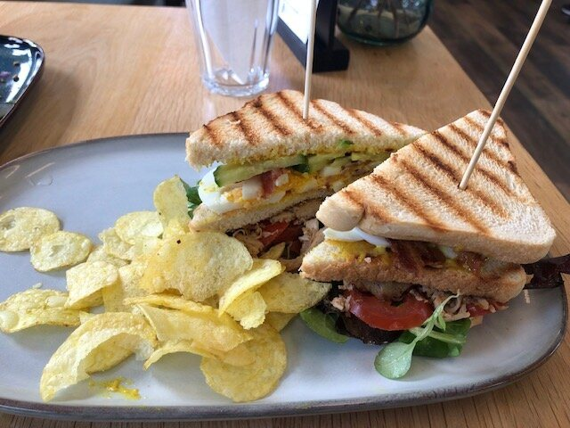
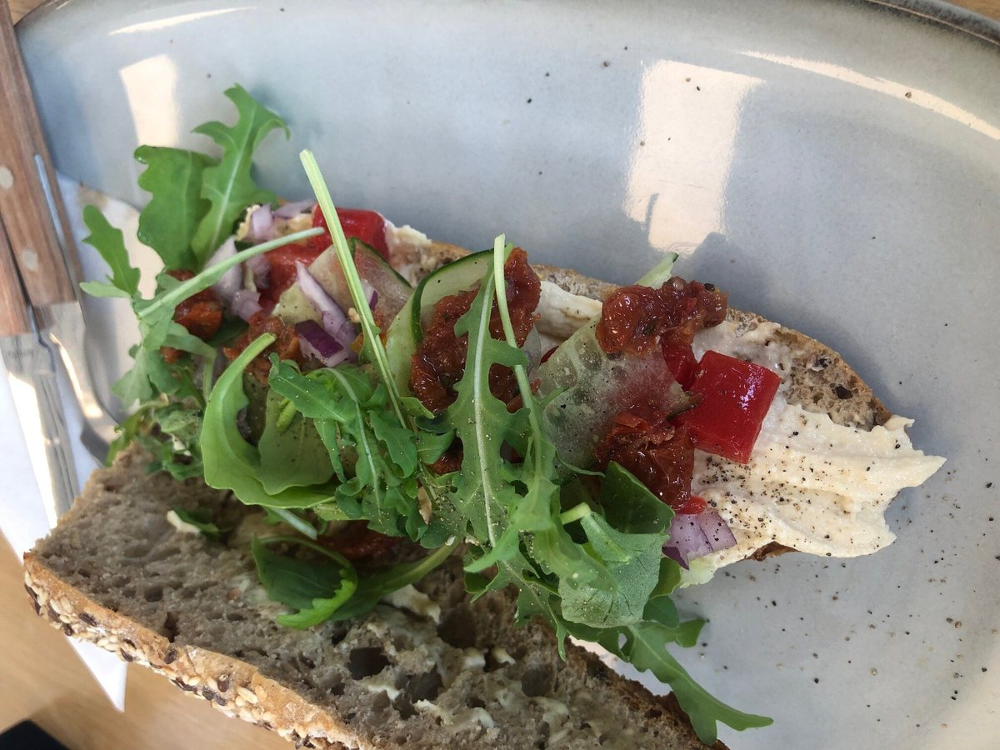
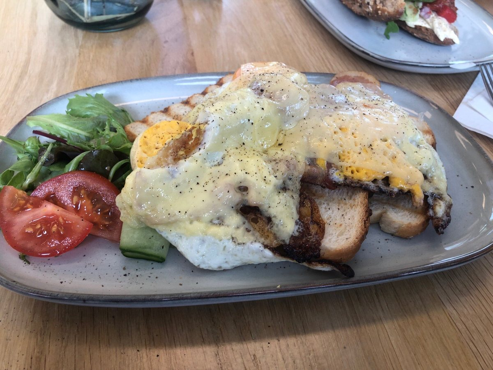
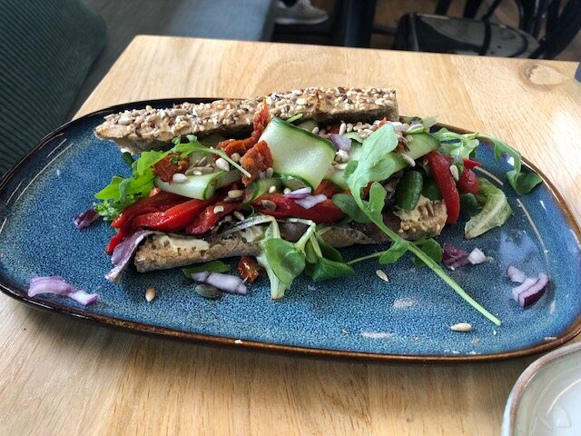
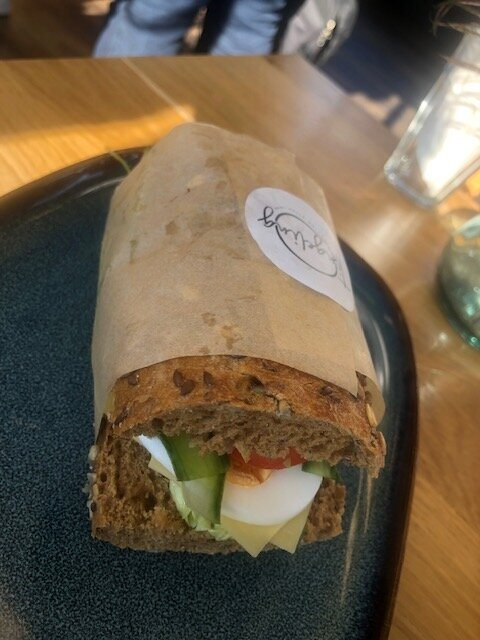
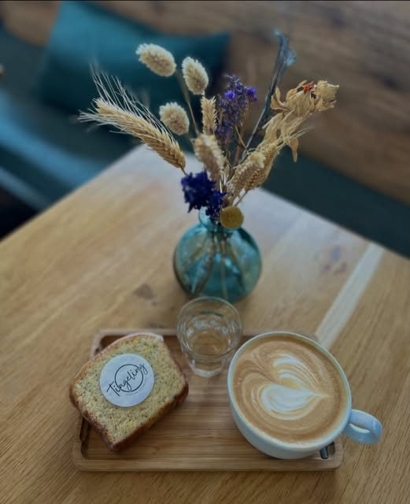
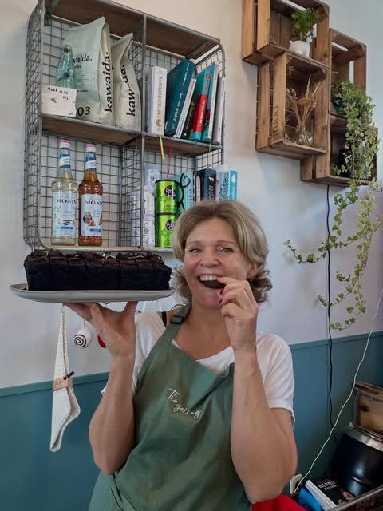
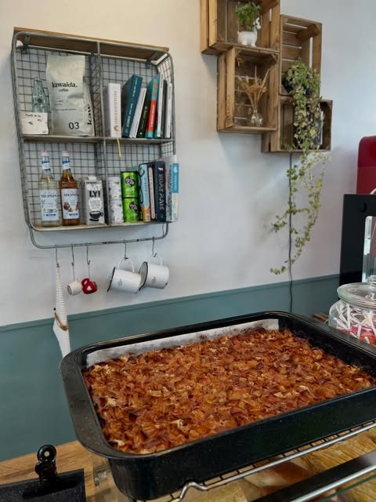
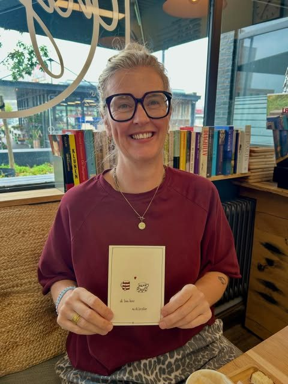
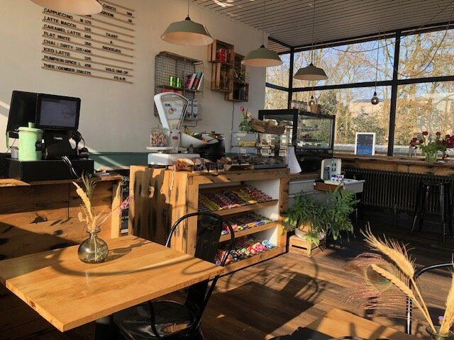

Broodjes & lunch
Vers en ruim belegd. Neem een broodje mee voor onderweg, of ga zitten voor een tosti, clubsandwich of uitsmijter.
- Belegde broodjes en stokbrood
- Tosti's en clubsandwiches van de grill
- Uitsmijters
- Worstenbrood en croissant ham-kaas




Koffie & iets zoets
Een cappuccino of latte voor in de trein, of rustig aan tafel met een stuk taart erbij. De taart, cake en repen bakken we zelf, en er komt regelmatig iets nieuws op het houten plankje.
- Koffie, cappuccino en latte, ook om mee te nemen
- Huisgemaakte taart en cake
- Appel-havermoutrepen, ook vegan
- Stempelkaart voor vaste gasten



Kadootjes
Bij Tingeling vind je ook kleine cadeautjes. Zoals de handgetekende kaarten van Emma.Nieke: duurzaam en lokaal gemaakt, met lieve, troostende en leuke teksten. Een deel van de opbrengst gaat naar organisaties die zich inzetten voor het mentale welzijn van jongeren.
Kaartje € 3,50 incl. envelop

Kom langs op het station
We zitten in het stationsgebouw aan het Stationsplein. Vraag of bestelling? Bel of stuur een WhatsApp.
Tingeling
Koffie, taart, broodjes en kadootjes.
- Maandag t/m vrijdag
- 07.00 – 17.30
- Zaterdag en zondag
- 09.00 – 16.00